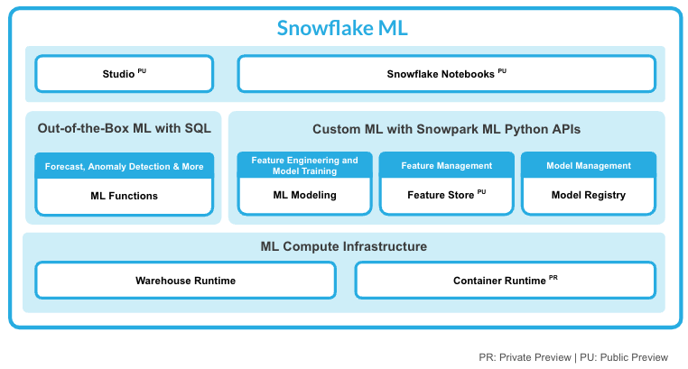

Through this quickstart guide, you will learn how to add a custom model to the Snowflake Model Registry. You will set up your Snowflake and Python environments, train a model using the PyCaret library, deploy that model to the Model Registry and run the inference within your Snowflake environment.
Snowpark is the set of libraries and runtimes that securely enable developers to deploy and process Python code in Snowflake.
Client Side Libraries - Snowpark libraries can be installed and downloaded from any client-side notebook or IDE and are used for code development and deployment. Libraries include the Snowpark API for data pipelines and apps and the Snowpark ML API for end to end machine learning.
Elastic Compute Runtimes - Snowpark provides elastic compute runtimes for secure execution of your code in Snowflake. Runtimes include Python, Java, and Scala in virtual warehouses with CPU compute or Snowpark Container Services (public preview) to execute any language of choice with CPU or GPU compute.
Learn more about Snowpark.
Snowflake ML is the integrated set of capabilities for end-to-end machine learning in a single platform on top of your governed data. Snowflake ML can be used for fully custom and out-of-the-box workflows. For ready-to-use ML, analysts can use ML Functions to shorten development time or democratize ML across your organization with SQL from Studio, our no-code user interface. For custom ML, data scientists and ML engineers can easily and securely develop and productionize scalable features and models without any data movement, silos or governance tradeoffs.

This qucikstart will focus on the Snowflake Model Registry, which provides scalable and secure model management of ML models in Snowflake, regardless of origin.
The Snowflake Model Registry allows customers to securely manage models and their metadata in Snowflake, regardless of origin. The model registry stores machine learning models as first-class schema-level objects in Snowflake so they can easily be found and used by others in your organization. You can create registries, and store models in them, using classes in the Snowpark ML library. Models can have multiple versions, and you can designate a version as the default.
The Snowflake Model Registry has built-in types support for the most common model types, including scikit-learn, xgboost, LightGBM, PyTorch, TensorFlow, Hugging Face pipelines, and MLFlow pyfunc models. Other types of models via the snowflake.ml.model.CustomModel class
This quickstart will focus on
A set on notebooks that trains a PyCaret model, creates a CustomModel for it and log and use it in Snowflake.
The very first step is to clone the GitHub repository. This repository contains all the code you will need to successfully complete this QuickStart Guide.
Using HTTPS:
git clone https://github.com/Snowflake-Labs/sfguide-deploying-custom-models-snowflake-model-registry.git
OR, using SSH:
git clone git@github.com:Snowflake-Labs/sfguide-deploying-custom-models-snowflake-model-registry.git
Run the following SQL commands in a SQL worksheet to create the warehouse, database and schema.
USE ROLE ACCOUNTADMIN;
CREATE OR REPLACE WAREHOUSE MRCM_HOL_WH; --by default, this creates an XS Standard Warehouse
CREATE OR REPLACE DATABASE MRCM_HOL_DB; -- will be used to store the custom model
CREATE OR REPLACE SCHEMA MRCM_HOL_SCHEMA; -- will be used to store the custom model
These can also be found in the setup.sql file.
conda env create -f conda_env.yml
conda activate custom-model-hol
Optionally start notebook server:$ jupyter notebook &> /tmp/notebook.log &
{
"account" : "<your_account_identifier_goes_here>",
"user" : "<your_username_goes_here>",
"password" : "<your_password_goes_here>",
"role" : "ACCOUNTADMIN",
"warehouse" : "MRCM_HOL_WH",
"database" : "MRCM_HOL_DB",
"schema" : "MRCM_HOL_SCHEMA"
}
During this step we will train a PyCaret model and save it to local disc.
During this step we will create a CustomModel class that we will use with our trained PyCaret model, created in previous notebook, log it into the Snowflake Model Registry and do inference using the logged model on a Snowpark DataFrame.
Congratulations, you have successfully completed this quickstart! Through this quickstart, we were able to showcase how you can use the CustomModel class to log a model trained with a Machine Learning library that is not supported by default, but exists in the Snowflake Anaconda channel.